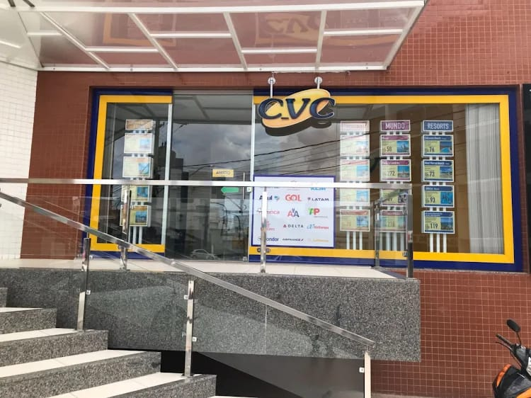

SOBRE A UNIDADE
Conheça a CVC PB – Sousa.
Uma unidade franqueada vinculada à marca CVC Viagens, localizada no município de Sousa, na Paraíba.
Conheça nossos canais
Foto da unidade CVC PB – SousaPRESENÇA LOCAL
Estamos em Sousa, na Paraíba.
A atuação da unidade está relacionada ao planejamento de viagens e à apresentação de serviços turísticos, incluindo passagens aéreas, cruzeiros, passeios, hotéis e locação de carros.
A unidade possui endereço físico em Sousa e canais digitais de atendimento para facilitar o contato de quem deseja consultar informações sobre viagens.
Encontre nossa unidadeSOBRE A MARCA
Uma marca dedicada ao universo das viagens.
A CVC Viagens atua no segmento de turismo desde 1972 e apresenta opções de viagens nacionais e internacionais, reunindo produtos como passagens aéreas, hospedagens, pacotes e cruzeiros, além de outros serviços turísticos.
Conheça o site oficial da CVCPOSSIBILIDADES PARA SEUS PLANOS
Cada pessoa tem uma maneira própria de viajar.
Por isso, este site organiza diferentes categorias de serviços e possibilidades turísticas, facilitando a consulta e o acesso ao atendimento da unidade.
Explore os serviços apresentados no site ou entre em contato para obter informações e confirmar a disponibilidade local.